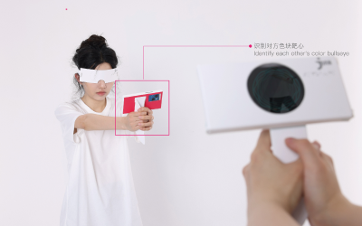
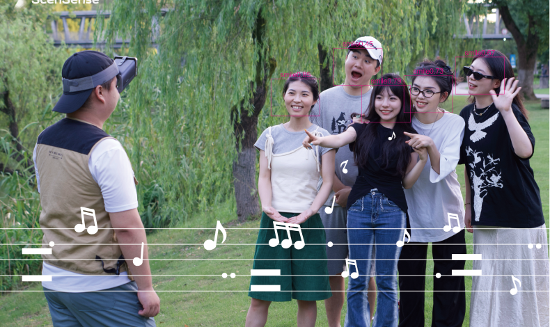
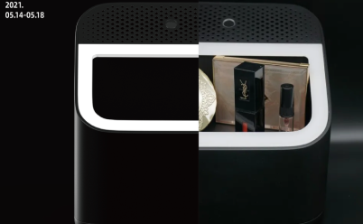

LUO SHAN
luoshan3398@qq.com

I graduated with a master's degree from the China Academy of Art, Majoring in equal design between the
blind and the sighted. Studied under Professor Wang Yun. I have served as a product manager at an AI
company：MINDVERSE for half a year and am currently a researcher in the field of accessibility at the
China Academy of Art.
My research direction is to explore the imbalances and fairness that exist between blind and sighted
individuals in different relationships, and to design systematic solutions through creative and fun game
interactions for daily communication scenarios between the blind and the sighted.
My research strengths lie in the innovative design thinking that integrates art and technology,
achieving humanistic creative solutions through intelligent systems. I hope that design can use
technology to build more bridges between people with disabilities and society. I am applying for a PhD
in human-computer interaction and an academic internship.

 Design Vlogger :
Design Vlogger :
NEWS/THINKING
Feb 25 2025
The research project "Hearing the Smiles" was accepted as a poster presentation by both the IEEE
Conference on Virtual Reality (IEEE VR) and the Augmented Human International Conference (AH) in
previous years.
Feb 20 2025
A new research project on the unfamiliar relationships between visually impaired individuals and sighted
people has been launched!
Feb 10 2025
An AI-powered dream exploration game has recently been developed and is currently undergoing closed beta
testing in China.
July 13 2024
Our series of accessible works is about to be invited to be exhibited at the UNITE 2024 Developers
Conference.
July 12 2024
I am delighted that our work "Foldiverse" has been accepted for The CHI PLAY 2024 Student Game Design
Competition!
July 13 2024
I am delighted that my work "Hearing The Bullseye" has been accepted for The ASSETS 2024 Poster!
July 12 2024
I am delighted that my work "Hearing The Bullseye" has been accepted for The CHI PLAY 2024 Student Game
Design Competition!
July 03 2024
I am delighted that my work "Hearing The Bullseye" has been accepted for the CSCW 2024 demo!
June 15 2024
The 'Melody of Hearing Smiles' is almost ready! Just thinking about the background music that plays when
the blind see me smiling makes me really happy!
June 10 2024
Received the task from the China Design Museum to compile the 'White Paper on Artificial Intelligence
Design‘.
May 13 2024
Participated in the 2024 CHI conference work shop.
May 13 2024
Delighted to receive the 'Big and Small Matters' general mobilization organized by Xiaohongshu and the
China Disabled Persons' Welfare Foundation.
REPORT
China Youth Daily(中国青年报）
”This
Post-95s Girl Uses AI to Help Blind and Able-bodied
People...”
June 20 2023
Today’s Headlines,（今日头条）
”Post-95s Girl Develops ’Sunny Blind Co-Play’
Shooting...”
June 28 2023
Zhejiang News（浙江新闻）
”Archery
with Ears as Eyes.”
May 15 2021
Xiaohongshu Social Media, Hot Search List（小红书热搜榜）
“Hot
Search with 500w Traffic...”
June 11 2023
HFA Community
"In the senior Guomei, one
can see the highest state of
'being competitive without realizing it."
April 26 2024
Human Pixels（人间像素）”Hearing, This Colorful World.”
June 29 2023
EXHIBITION/AWARD
Dec 27 2023
Hangzhou
ShangHai West Bund Art And Design Expo, A Live-action CS Sound
Shooting Game App.
June 01 2023
Hangzhou
Zhejiang Exhibition Hall, A Live-action CS Sound Shooting Game
App.
July 15 2023
Guangzhou
Hong Kong University of Science and Technology, A Live-action
CS Sound Shooting Game.
Dec 15 2022
Shenzhen
4th China Design Exhibition and Public Art Special Exhibition,
Hearing The Bullseye.
March 15 2022
Dutch
Dutch Design Week, Hearing The Bullseye.
June 15 2021
Shaoxing
Beyond the Realm Exhibition: Design Intellegence Center
Honorable Mentions, Hearing The Bullseye.
Dec 25 2022
Gold Award, 13th International User Experience Competition
(UXDA, UXPA).
Dec 18 2022
Finalist, World Summit on the Information Society (WSIS) Award
Nomination.
May 15 2022
Finalist, OPPO Global ”Smile Proposal” Finalist Award.
Dec 22 2021
Honorable Mention, DIA China Design Intelligent Manufacturing
Award.
June 15 2018
Third Prize, Hunan Province Internet Plus College Students
Innovation and Entrepreneurs.
RESEACH
Hearing the Bullseye: An Auditory-Cued Archery Exergame for
the Visually Impaired and Their Sighted Family and Friends.
Design Intelligence Project, Alibaba Cloud Design × China
Academy of Art. 2021
Abstract：How can blind and sighted individuals play
together? The natural disparity in visual abilities often
poses challenges for fair competition in social play. This
can diminish the confidence of visually impaired (VI)
individuals and reduce engagement for sighted players. While
previous literature has incorporated fairness design
strategies for the VI, we additionally aim to address the
potential problem of boredom for sighted players by
providing enhanced visual feedback without compromising
fairness as a novel design strategy...
CNKI’23
CHI WORKSHOP’2024
ASESSTS’2024
Utility model patent, No: ZL202110530004.0.
CHI PLAY2024
CSCW’2024
PDF

Family-centered simple sound shooting interaction game
.(under review)
Design Innovation Center, China Academy of Art. 2023
Abstract：For visually impaired individuals from less
affluent backgrounds, obtaining an experience that allows
them to play quickly with sighted people is quite
extravagant. How can we enable blind individuals to play
with their family and friends in a cost-effective manner? to
make the experience of equal competition more
family-centered for blind individuals, we simplified the
previous archery game into a paper version, which can be
easily operated with just a smartphone and paper. This app
facilitates sound-based CS shooting games for both blind and
sighted players.
ASESSTS POSTER
National Innovation and Entrepreneurship Project:
202210355061.

"Hearing the Smile" — See Sing: Speculating an AI-Mediated Reality for the Visually Impaired.
(Working in process)
Design Innovation Center, China Academy of Art. 2024
Abstract：How can we allow blind individuals to "see" the
smiles of strangers? In social moments, the reason for
promoting communication between the visually impaired and
sighted people may be due to non-verbal gestures or
expressions, which are very important in the social process.
We focus on the smile at the beginning of social
interactions and transform it into the background music of
the destined encounter moment in a TV drama, so that every
encounter can hear the melody of a smile.

AI Makeup Box for the Blind.
Design Innovation Center, China Academy of Art. 2021
Abstract：This is a makeup box for the blind developed in
2021. It uses a camera to recognize facial features,
including lips, eyes, and facial contours, and applies AI
small sample models to provide makeup suggestions for the
blind. Due to the slow development of large language models
in the early stages of the project, few-shot learning was
used for training at that time. Looking back with today's
technological advancements, this work still holds historical
significance. It was the first time we realized that the
pursuit of beauty is not related to sensory perception but
is an intrinsic human impulse.
More Research Project···